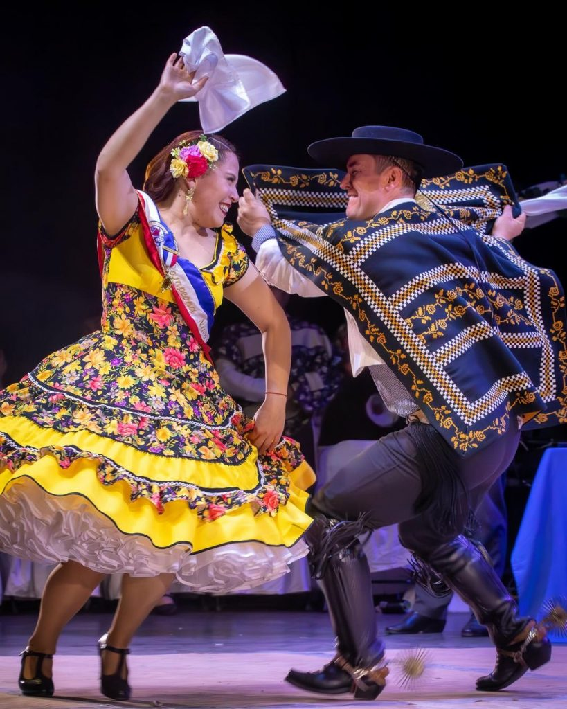
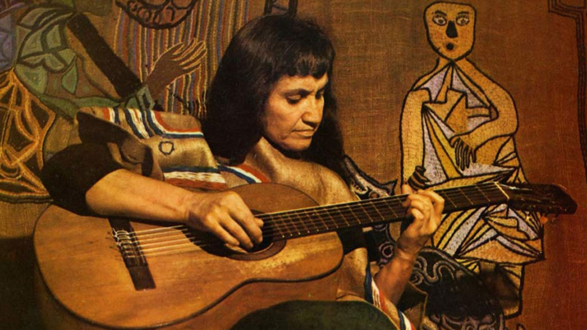

Cultura
Cultura Chilena
A cultura chilena é resultado da mistura entre tradições indígenas e influências europeias, especialmente espanholas. Ao longo dos séculos, essa combinação formou uma identidade cultural rica e diversa, presente na música, na arte, na culinária e nas festividades do país. Elementos da cultura Mapuche, por exemplo, ainda são muito valorizados e fazem parte do cotidiano em várias regiões. Além disso, o Chile se destaca por sua forte produção artística e literária, sendo o berço de importantes nomes da literatura mundial, como Pablo Neruda e Gabriela Mistral.


Tradições e Costumes
As tradições chilenas são marcadas por celebrações vibrantes e costumes que refletem o orgulho nacional. Uma das principais festas é o “Fiestas Patrias”, comemorado em setembro, com danças típicas como a cueca, considerada a dança nacional do Chile. Durante essas celebrações, é comum encontrar trajes tradicionais, música ao vivo e comidas típicas. Além disso, o povo chileno valoriza muito a convivência social, sendo comum encontros familiares e eventos comunitários que fortalecem os laços culturais e sociais.
Arte, Música e Vida Cultural
O Chile possui uma cena cultural ativa e diversificada, com destaque para a música, o cinema e as artes visuais. A música chilena vai desde o folclore tradicional até estilos modernos, como rock e pop, refletindo diferentes gerações e influências. O país também conta com diversos museus, teatros e centros culturais, principalmente em cidades como Santiago e Valparaíso. A arte urbana, especialmente os murais coloridos de Valparaíso, é reconhecida internacionalmente e contribui para a identidade visual única do país. Essa riqueza cultural torna o Chile um lugar dinâmico, onde tradição e modernidade convivem de forma harmoniosa.
